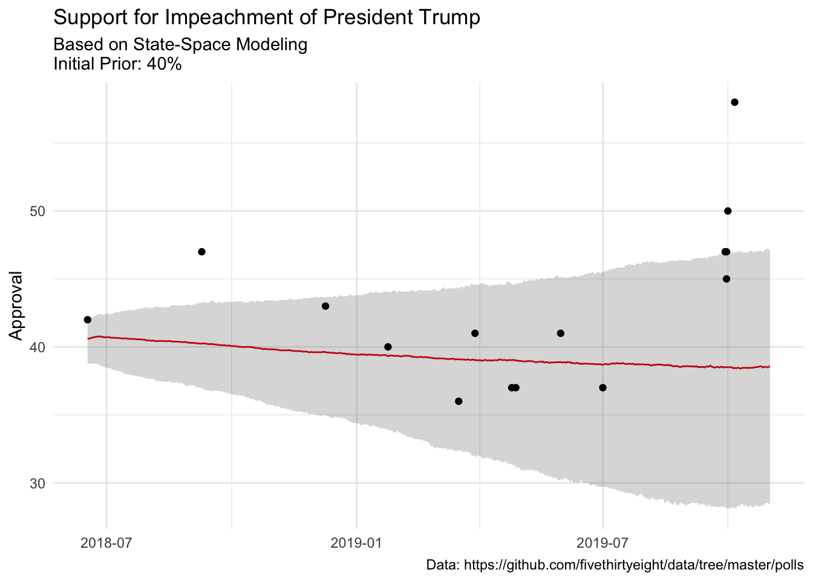

![]()
suppressPackageStartupMessages(library(tidyverse))
theme_set(theme_minimal())
dat <- read_csv("https://gist.githubusercontent.com/medewitt/74ad210ea8cd3e5870e44a8b3b2e7d64/raw/116273bc73830331bd6b8c1fdd9e48d5ccb8cc8d/impeachment.csv")So I suppose this is a logical follow-up to the previous post. Now, instead of approval, we can look at impeachment.
The Data
Our friends at fivethirtyeight have not publically shared the polls that they have aggregated, so I will use my own aggregations.
Multiple Polls on Multiple Days?
In order to build the data for Stan, it is necessary to make some wide data frame. Additionally, I need to calculate some standard errors. Just a reminder for those at home, the standard error for a binomial distribution is:
\[SE = \sqrt\frac{p(1-p)}{n}\]
As I did last time, I’m also going to use some of the new pivot_* functions from {tidyr}. They are great! These tools bring back some of the functionality that was missing when {tidyr} emerged from {reshape2}. It would probably be better to use the MOE as specified by the pollster to get the true design effect, but just to crank this out, I am not going to do that.
library(lubridate)
Attaching package: 'lubridate'The following objects are masked from 'package:base':
date, intersect, setdiff, uniondat_range <- crossing(seq(min(dat$date, na.rm = TRUE),
max(mdy("11/1/2019")),
"1 day") %>%
enframe(name = NULL) %>%
set_names("date_range"), pollster = unique(dat$pollster))
formatted_data <- dat %>%
mutate(my_end = date) %>%
select(my_end, approve, n = n, pollster) %>%
mutate(polling_var = sqrt(.5 * (1-.5)/n)*100) %>%
right_join(dat_range, by = c("my_end" = "date_range", "pollster"))
formatted_data[is.na(formatted_data)] <- -9
sigma <- formatted_data %>%
select(my_end, pollster, polling_var) %>%
pivot_wider(names_from = pollster,
values_from = polling_var,
values_fn = list(polling_var = max)) %>%
select(-my_end) %>%
as.matrix()
y <- formatted_data %>%
select(my_end, pollster, approve) %>%
pivot_wider(names_from = pollster,
values_from = approve,
values_fn = list(yes = max)) %>%
select(-my_end) %>%
as.matrix()Our Model
This is the same model from this blog post and this one courtsey of James Savage and Peter Ellis.
// Base Syntax from James Savage at https://github.com/khakieconomics/stanecon_short_course/blob/80263f84ebe95be3247e591515ea1ead84f26e3f/03-fun_time_series_models.Rmd
//and modification inspired by Peter Ellis at https://github.com/ellisp/ozfedelect/blob/master/model-2pp/model-2pp.R
data {
int polls; // number of polls
int T; // number of days
matrix[T, polls] Y; // polls
matrix[T, polls] sigma; // polls standard deviations
real inflator; // amount by which to multiply the standard error of polls
real initial_prior;
real random_walk_sd;
real mu_sigma;
}
parameters {
vector[T] mu; // the mean of the polls
real<lower = 0> tau; // the standard deviation of the random effects
matrix[T, polls] shrunken_polls;
}
model {
// prior on initial difference
mu[1] ~ normal(initial_prior, mu_sigma);
tau ~ student_t(4, 0, 5);
// state model
for(t in 2:T) {
mu[t] ~ normal(mu[t-1], random_walk_sd);
}
// measurement model
for(t in 1:T) {
for(p in 1:polls) {
if(Y[t, p] != -9) {
Y[t,p]~ normal(shrunken_polls[t, p], sigma[t,p] * inflator);
shrunken_polls[t, p] ~ normal(mu[t], tau);
} else {
shrunken_polls[t, p] ~ normal(0, 1);
}
}
}
}
Prep the Data
Now we can put the data in the proper format for Stan. I’m also going to supply the 2016 voteshare as the initial prior. This is probably a favourable place to start.
library(rstan)Loading required package: StanHeaders
rstan version 2.26.3 (Stan version 2.26.1)For execution on a local, multicore CPU with excess RAM we recommend calling
options(mc.cores = parallel::detectCores()).
To avoid recompilation of unchanged Stan programs, we recommend calling
rstan_options(auto_write = TRUE)
For within-chain threading using `reduce_sum()` or `map_rect()` Stan functions,
change `threads_per_chain` option:
rstan_options(threads_per_chain = 1)
Attaching package: 'rstan'The following object is masked from 'package:tidyr':
extractrstan_options(auto_write = TRUE)
options(mc.cores = parallel::detectCores())
approval_data <- list(
T = nrow(y),
polls = ncol(sigma),
Y = y,
sigma = sigma,
initial_prior = 40, # Rough dissapproval ratings
random_walk_sd = 0.2,
mu_sigma = 1,
inflator =sqrt(2)
)Run the Model
Now we can run the model. This might take a little while, but we have relatively sparse data and few instances per pollster, so it is what it is.
getwd()[1] "/Users/michael/blog/quarto-blog/programming/2019-10-08-how-about-impeachment"sstrump <- stan_model("sstrump.stan")recompiling to avoid crashing R sessionTrying to compile a simple C fileRunning /usr/local/Cellar/r/4.1.2/lib/R/bin/R CMD SHLIB foo.c
/usr/local/opt/llvm/bin/clang -I"/usr/local/Cellar/r/4.1.2/lib/R/include" -DNDEBUG -I"/usr/local/lib/R/4.1/site-library/Rcpp/include/" -I"/usr/local/lib/R/4.1/site-library/RcppEigen/include/" -I"/usr/local/lib/R/4.1/site-library/RcppEigen/include/unsupported" -I"/usr/local/lib/R/4.1/site-library/BH/include" -I"/usr/local/lib/R/4.1/site-library/StanHeaders/include/src/" -I"/usr/local/lib/R/4.1/site-library/StanHeaders/include/" -I"/usr/local/lib/R/4.1/site-library/RcppParallel/include/" -I"/usr/local/lib/R/4.1/site-library/rstan/include" -DEIGEN_NO_DEBUG -DBOOST_DISABLE_ASSERTS -DBOOST_PENDING_INTEGER_LOG2_HPP -DSTAN_THREADS -DUSE_STANC3 -DSTRICT_R_HEADERS -DBOOST_PHOENIX_NO_VARIADIC_EXPRESSION -DBOOST_NO_AUTO_PTR -include '/usr/local/lib/R/4.1/site-library/StanHeaders/include/stan/math/prim/fun/Eigen.hpp' -D_REENTRANT -DRCPP_PARALLEL_USE_TBB=1 -I/usr/local/opt/gettext/include -I/usr/local/opt/readline/include -I/usr/local/opt/xz/include -I/usr/local/include -fPIC -g -O3 -Wall -pedantic -std=gnu99 -mtune=native -pipe -c foo.c -o foo.o
In file included from <built-in>:1:
In file included from /usr/local/lib/R/4.1/site-library/StanHeaders/include/stan/math/prim/fun/Eigen.hpp:22:
In file included from /usr/local/lib/R/4.1/site-library/RcppEigen/include/Eigen/Dense:1:
In file included from /usr/local/lib/R/4.1/site-library/RcppEigen/include/Eigen/Core:88:
/usr/local/lib/R/4.1/site-library/RcppEigen/include/Eigen/src/Core/util/Macros.h:628:1: error: unknown type name 'namespace'
namespace Eigen {
^
/usr/local/lib/R/4.1/site-library/RcppEigen/include/Eigen/src/Core/util/Macros.h:628:16: error: expected ';' after top level declarator
namespace Eigen {
^
;
In file included from <built-in>:1:
In file included from /usr/local/lib/R/4.1/site-library/StanHeaders/include/stan/math/prim/fun/Eigen.hpp:22:
In file included from /usr/local/lib/R/4.1/site-library/RcppEigen/include/Eigen/Dense:1:
/usr/local/lib/R/4.1/site-library/RcppEigen/include/Eigen/Core:96:10: fatal error: 'complex' file not found
#include <complex>
^~~~~~~~~
3 errors generated.
make: *** [foo.o] Error 1trump_model <- sampling(sstrump,
data = approval_data,
iter = 2000,
refresh = 0,
chains = 2,
control = list(adapt_delta = .99,
max_treedepth = 15))Warning: The largest R-hat is 1.17, indicating chains have not mixed.
Running the chains for more iterations may help. See
https://mc-stan.org/misc/warnings.html#r-hatWarning: Bulk Effective Samples Size (ESS) is too low, indicating posterior means and medians may be unreliable.
Running the chains for more iterations may help. See
https://mc-stan.org/misc/warnings.html#bulk-essWarning: Tail Effective Samples Size (ESS) is too low, indicating posterior variances and tail quantiles may be unreliable.
Running the chains for more iterations may help. See
https://mc-stan.org/misc/warnings.html#tail-essDid It Converge?
I’m just going to look quickly at some of the Rhat values. I see that some of my ESS are a little lower than I would like. This isn’t completely surprising given the sparsity of data (57 different polls).
summary(trump_model, pars = "mu")$summary[1:15,] mean se_mean sd 2.5% 25% 50% 75%
mu[1] 40.57171 0.06688461 0.8390253 38.79381 40.02611 40.61405 41.15913
mu[2] 40.58373 0.06916978 0.8510183 38.78945 40.04464 40.60890 41.17695
mu[3] 40.59810 0.07288213 0.8643202 38.74587 40.08153 40.63977 41.19991
mu[4] 40.61636 0.07496786 0.8738297 38.75231 40.07574 40.66016 41.23521
mu[5] 40.65035 0.07669742 0.8788715 38.77510 40.10086 40.70176 41.26445
mu[6] 40.67427 0.07889395 0.8937057 38.79316 40.11622 40.71148 41.30710
mu[7] 40.69006 0.08191955 0.9079576 38.73624 40.12629 40.74594 41.31578
mu[8] 40.71140 0.08403055 0.9175342 38.75394 40.13983 40.75880 41.35111
mu[9] 40.72257 0.08681996 0.9323123 38.67432 40.16362 40.75648 41.39606
mu[10] 40.71641 0.08912113 0.9408960 38.67636 40.12711 40.76610 41.37630
mu[11] 40.69503 0.09176213 0.9490992 38.62022 40.09637 40.75624 41.35807
mu[12] 40.68546 0.09388030 0.9579102 38.56113 40.08877 40.73313 41.36512
mu[13] 40.66916 0.09628616 0.9669459 38.54256 40.08527 40.71292 41.35203
mu[14] 40.65421 0.09792317 0.9782968 38.51321 40.05461 40.70131 41.36263
mu[15] 40.64796 0.10100273 0.9911975 38.44232 40.05587 40.71899 41.34445
97.5% n_eff Rhat
mu[1] 42.06147 157.36123 1.006625
mu[2] 42.11653 151.37181 1.007068
mu[3] 42.13864 140.63946 1.008537
mu[4] 42.17414 135.86368 1.009084
mu[5] 42.20145 131.30743 1.010744
mu[6] 42.25451 128.32215 1.010136
mu[7] 42.31884 122.84459 1.010784
mu[8] 42.36131 119.22576 1.012129
mu[9] 42.40014 115.31443 1.013214
mu[10] 42.42691 111.46073 1.013128
mu[11] 42.37930 106.97843 1.014426
mu[12] 42.40329 104.11196 1.014805
mu[13] 42.34483 100.85017 1.015619
mu[14] 42.40961 99.80913 1.015940
mu[15] 42.44043 96.30618 1.017890Now Let’s see…
Now we can extract the model fit and see how it looks!
mu_trump <- extract(trump_model, pars = "mu", permuted = T)[[1]] %>%
as.data.frame
names(mu_trump) <- unique(dat_range$date_range)
mu_ts_trump <- mu_trump %>% reshape2::melt() %>%
mutate(date = as.Date(variable)) %>%
group_by(date) %>%
summarise(median = median(value),
lower = quantile(value, 0.025),
upper = quantile(value, 0.975),
candidate = "Trump")No id variables; using all as measure variablesMore to Come
Our model has fairly wide credible intervals, which is to be expected, but the last few point estimates are clear…something is happening. And it looks like something that happened about a week or two has started to move the trend….
mu_ts_trump %>%
ggplot(aes(date, median))+
geom_line(color = "#E91D0E")+
geom_ribbon(aes(ymin = lower, ymax = upper), alpha = .2)+
labs(
title = "Support for Impeachment of President Trump",
subtitle = "Based on State-Space Modeling\nInitial Prior: 40%",
caption = "Data: https://github.com/fivethirtyeight/data/tree/master/polls",
y = "Approval",
x = NULL
)+
geom_vline(xintercept = as.Date(Sys.Date()), color = "orange")+
geom_point(data = dat, (aes(date, approve)))
Reuse
Citation
BibTeX citation:
@online{dewitt2019,
author = {Michael DeWitt},
title = {How {About} {Impeachment?}},
date = {2019-10-08},
url = {https://michaeldewittjr.com/programming/2019-10-08-how-about-impeachment},
langid = {en}
}
For attribution, please cite this work as:
Michael DeWitt. 2019. “How About Impeachment?” October 8,
2019. https://michaeldewittjr.com/programming/2019-10-08-how-about-impeachment.